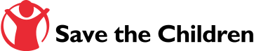
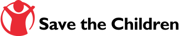

Foreword
In June UNHRD celebrated the 18th anniversary of its founding, marking the establishment of the first hub in Brindisi in 2000. In many countries around the world, turning 18 signifies a transition into adulthood; now more than ever we, as a Network, must hold ourselves accountable as a critical tool for emergency preparedness and response, and work even harder for our humanitarian partners so they can rely on us to meet more demanding challenges in ever more complex environments.
This Year in Review provides an overview that demonstrates the support UNHRD provided to its partners responding to crises all over the world. The figures in this report were collated using newly developed automated reporting tools, which will soon be available to partners as part of our efforts to expand our digital services (we look forward to giving our partners more control of their stocks, analytics and activity reports in 2019 through a newly revamped website and online partner portal).
What cannot be so directly quantified is the work going on behind the scenes that makes every operation possible. From the suppliers to the final destinations, UNHRD performs a number of important back-office functions to deliver relief items and logistics equipment to those in the field. Therefore, we are dedicating part of this report to recognize the work of staff who provide fundamental support in procurement, finance, human resources and admin to keep the UNHRD mechanism running smoothly and efficiently.
These staff are crucial when deploying the UNHRD Rapid Response Team and other staff on temporary field assignments to provide technical support to our colleagues in the field.
Throughout 2018, UNHRD staff were deployed to 15 countries; this report will highlight the experiences of colleagues who worked in the Democratic Republic of the Congo (DRC), Chad and Uganda, as well as capacity building activities in Kuala Lumpur. Additionally, UNHRD organized, participated in or hosted a number of trainings and simulations to build the logistics and response capacities of its partners.
As we try to keep up with new challenges and contribute to the Sustainable Development Goals, UNHRD continues to develop its own innovation LAB. Hosted in the Brindisi hub, the LAB is a research and development unit that engages in efforts to improve logistics support equipment and packaging solutions. Partnering with humanitarian organizations, academia, private sector actors and other stakeholders, the LAB is committed to help the humanitarian community find new ways to reduce the environmental impact of operations, including by integrating green technologies, reducing waste, and reusing and upcycling packaging materials.
Once again, we would like to sincerely thank our donors for their generous support, and our partners and colleagues for their great teamwork. Your efforts and collaboration are what allow UNHRD to assist our 88 humanitarian partners provide lifesaving support to those in need.


 
